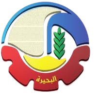

Beheira TimeLens
WELCOME TO BEHEIRA TIMELENS !
Step in- the past is still very much present in Beheira
An ancient Greek colony that served as a trade center between Egyptians and Greeks. Considered the first permanent Greek settlement inside Egypt.
A trilingual inscription that revealed the secret of hieroglyphics after its discovery in Rosetta in 1799. Became the most important key to understanding ancient Egyptian history.

One of the oldest monasteries in Wadi al-Natrun and a major center of Coptic monasticism. Known for its deep heritage and unique ancient manuscripts.
Founded by Saint Macarius the Great, dedicated to the Virgin Mary, and an important Coptic monastic center.
A historic monastery founded by Saint Bishoy, one of the most important figures in Egyptian monasticism. Features ancient churches, archaeological remains, and a distinctive spiritual legacy.
An ancient monastery inhabited by Syriac monks who gathered rare manuscripts. Known for its simple architecture and a historic wall painting at the entrance.
A historic mosque in Damanhour, built by Amr ibn al-As, representing the early Islamic presence in the Nile Delta.
A Mamluk fortress built to protect the Rosetta coastline from naval attacks. One of the most prominent surviving military fortresses in the Nile Delta.
Associated with Sheikh Mohammed El-Kharashy, the first Grand Imam of Al-Azhar, known for religious scholarship and architecture.
A modern cultural landmark hosting artistic performances and cultural events, central to Damanhour’s artistic life.
A protected wetland and natural reserve, one of Egypt’s largest natural lakes, vital for wildlife, migratory birds, and local fishing
Naucratis was a city of Ancient Egypt,that was situated in the
western Nile Delta, near the modern town of Kom Gieif in Etay Al
Baroud. Naucratis was founded as a Greek trading post in the 7th
century BCE, during the Late Period of ancient Egypt. It was the
only Greek settlement permitted to operate in Egypt during this
time, serving as a key hub for Greek traders and merchants.
This city has become an archaeological find of the highest
significance and the source of not only many beautiful objects
of art now gracing the museums of the world but also an
important source of some of the earliest Greek writing in
existence, provided by the inscriptions on its pottery.
-In 570 BCE,the site of Naukratis
became a Greek settlement when Amasis II gave it to the
surviving Greek soldiers to be used as a trading colony .And the
city was governed by Greek officials and operated under the
supervision of the Egyptian pharaohs.
-Naukratis became a major beacon of trade for both the Greeks
and the Egyptians.
For greeks , it facilitated trade between Egypt and the Greek
world and that is what they always coveted . For the ancient
Egyptians, Naukratis represented a link from the Nile delta to
the Mediterranean world
-between 1884 and 1885, Naukratis
was first discovered by English Egyptologist Flinders Petrie
during his excavation of the site
- Excavations have yielded a massive quantity of archaeological
discoveries from diverse cultures and periods: the Late Period,
the Archaic and Classical Periods, the Ptolemaic Period, and the
Roman and early Byzantine Periods.
-Excavations at Naukratis in the 19th–20th centuries revealed
major sanctuaries and facilities such as the large Hellenion
Sanctuary in the north, shrines to Hera, Apollo, the Dioscuri,
and Aphrodite along the Nile and in the south a monumental
sanctuary to Amun-Ra, Nut, and Khonsu.

The rosetta stone was discovered in 1799 during the restoration process of the Citadel of Qaitbay , the Rosetta Stone was discovered by French soldiers under the command of French Captain Pierre-François Bouchard . The famous Rosetta Stone was discovered in the southwestern tower of that castle. That campaign might have already discovered at that time the key to the history of the Pharaonic civilization “Ancient Egypt History” and then knew its importance in history until we reached the secret of the most important and greatest ancient civilization that humanity had known until our present time and throughout the ages.
Because of the triumph of the British troops over the French in
Egypt during 1801, the stone came under British possession with
the Capitulation of Alexandria. And it was transported to London,
where since 1802 it has been exhibited in the British Museum, with
the important title of being the most visited piece in the
place.
But the Rosetta Museum in Rashid (Rosetta) hosts a remarkably
detailed replica of the Rosetta Stone. Far from being “just a
copy,” this replica is a symbolic centerpiece that connects
visitors to one of the greatest discoveries in history.
the Rosetta Stone has served as a key to unlocking the mysteries
of the ancient Egyptian language and culture. It is black basalt
stone with inscriptions in three different scripts: Egyptian
hieroglyphs, Egyptian Demotic script, and ancient Greek.
The significance of the Rosetta Stone lies in its multi -lingual
inscriptions. The same text was written in three different
scripts, allowing scholars to compare the known Greek text with
the previously unreadable Egyptian hieroglyphs. This provided
scholars with a starting point to decipher and understand the
ancient Egyptian language. After studying the Rosetta Stone for
several years, Champollion successfully deciphered the ancient
Egyptian hieroglyphs in 1822.
Through the Rosetta Stone, we have learned about the powerful
pharaohs, the complex religious beliefs, the detailed hieroglyphic
writing system, and the importance of rituals in ancient Egyptian
society. It has allowed us to understand their construction
techniques, farming practices, and medical knowledge. The Rosetta
Stone has truly served as a window into the rich and fascinating
world of the ancient Egyptians.
The Monastery of Saint Macarius is the southernmost monastery in Wadi al-Natrun and it was founded by Saint Macarius the Great “a student of Anba Anthony the Great, the founder of Christian monasticism” in 360 AD. it is considered one of the most significant Coptic monasteries in existence because of its impact on the Coptic Church. It has been a source of the culture on which nearly all ecclesiastical Coptic life is based, and has supplied the Coptic Church with more prelates than any other monastery. It has provided more than a quarter of the Coptic patriarchs
-Three times in the course of the fifth century,
the monastery was sacked by Berbers. In the third sack, in 444,
, forty-nine monks were martyred by the invading Berbers.
- in the Mid-6th century The
monastery became the official residence of the Coptic
patriarchs, since the Byzantines ruled Egypt and did not allow
the patriarchs to live in Alexandria
-From the middle of the fourteenth century
this monastery began to deteriorate. And in 1656 AD The traveler
Jean de Thévenot visited the monastery and described it as the
most dilapidated of the four monasteries in Wadi al-Natrun.
- Around the 60s and 70s,
a massive restoration process made all the efforts to preserve
its spiritual and architectural aspects.
-From the Middle Ages , the monastery had sheltered a
considerable library. The library remained intact until the
seventeenth century, when European bibliophiles discovered the
treasures. The library was carried off by them
-The Church of the Forty-Nine Martyrs was built in the
eighteenth century. It serves as the place of burial for the
forty-nine monks who submitted to the Berber swords.
The Monastery of the al-Baramos is located in the northwestern region of Wadi al-Natrun. And it is the first monastic establishment in Wadi El-Natrun in the year 340AD. It was founded by saint Macarius the great who dedicated it to the Virgin Mary. The monastery faced attacks and rebuilding, with notable residents such as Saint Moses the Black and Saint Arsenius. It played a significant role in supplying leaders to the Coptic Church, including popes like Christodolos and Matthew III and IV.
-in the 4th century, the Roman saints
Maximus and Domitius , sons of Emperor Valentinian I, became
monks here and the monastery become attributed to them .
in the fifth century, Like other monasteries
in Wadi El-Natrun, it suffered Berber attacks, leading to
destruction and martyrdom of monks.
- in the 7th century it was Rebuilt after
devastation and became part of the flourishing monastic
community in Wadi El-Natrun. - in the 19th–20th centuries ,it
was Renovated and revived with new buildings and restoration of
ancient churches.
- - in the 19th–20th centuries it was
Renovated and revived with new buildings and restoration of
ancient churches.
-This monastery is called “Baramus”, which comes from the Coptic
word “Be-Romeos” which means “Rumi” or “Baromeos” which means
“for the Romans” in relation to the Roman saints Maximus and
Domadeus. Thus, it is considered a non-Arabic word.
-near the Monastery of Barmous, from the north-east, 50 meters
away, the Monastery of Anba Musa the Black or the original
Monastery of Barmoos, which is now in ruins
Saint Bishoy’s monastery is considered one of the oldest monasteries in Egypt and the world, since it dates back to the end of the fourth century (around 374 AD)and was established by Saint Bishoy the Great. It is one of the four main monasteries in Wadi El Natrun, which acquired the status of sanctification in Christianity because it is among the most important cities in which the Holy Family took shelter during their visit to Egypt. After the visit of the Holy Family to the Wadi El-Natrun desert, that area became full of monasteries full of monks.
in 841, this monastery became significant
when Pope Joseph I of Alexandria fulfilled Pishoy's wish by
moving his and Paul of Tammah's remains from the Monastery of
Pishoy in Deir el-Bersha to the Monastery of Saint Pishoy.
in the fifth century, The monastery is
fortified with a keep built to protect it from Berber attacks.
Later, The original castle was replaced by a four-storied castle
constructed by Pope Shenouda III.
from 1971 to 2012, the monastery underwent
significant developments, including the purchase and development
of surrounding land, restoration of ancient buildings and
churches, and many more construction works.
-It Contains five churches, with the main church dedicated to
Saint Pishoy. Other churches are dedicated to Mary, Abaskhiron
the Soldier, Saint George, and Archangel Michael.
-Inside the monastery, there is the Well of the Martyrs.
According to Coptic tradition, Berber attackers washed their
swords there after killing the Forty Nine Martyrs of Scetis. The
bodies of these martyrs were later gathered by Christians and
buried in the nearby Monastery of Saint Macarius the Great.
The monastery of Syrians was founded by monks from the Monastery of Saint Pishoy and located at west of Saint Bishoy’s Monastery. it is the smallest surviving monastery of Wadi Natrun and is the most famous amongst clergymen and scholars around the world. Although the monastery’s foundations date back to around 575 AD, it is known as the Monastery of the Syrians because of a group of al-Surian monks who settled in wadi El Natrun from the 8th to the 14th.
-In the eighth century, it was purchased by
Syriac merchants, leading to its use by Syrian monks hence its
modern name, the Syrian Monastery
-in 817 AD, it faced attacks by
desert Bedouins and Berbers, with significant damage occurring
It was rebuilt in 850 AD by two monks named Matthew and
Abraham
-between 1839 and 1851 , The
British Museum acquired a significant number of Syriac
manuscripts from the monastery's library, leading to research on
the Syriac language and culture.
-In 1994,
a team of researchers from the University of Leiden examining
the plaster layers covering the walls of the church discovered
many frescos (wall paintings) from the seventh to eighteenth
centuries AD. Among the depictions are the birth and death of
the Virgin Mary, and Jesus Christ carrying her soul.
- It is dedicated to the Virgin Mary . and the Church of the
Virgin Mary is the monastery’s main church which is Built in 645
AD, it is also its oldest building after the Cave of Anba Bishoy
to its west.
- An extensive and rare collection of Syriac manuscripts was
discovered in the monastery’s library during the nineteenth
century. This unparalleled collection, currently housed in the
Vatican Library and other institutions, includes some of the
oldest Greek texts by Aristotle, Euclid, and Hippocrates.
-The monastery houses ancient wall paintings that reflect both
Coptic and Syriac influences, offering insight into the blending
of traditions.
Al-Tawbah Mosque is one of the most important historical and religious landmarks in Damanhour, El-Beheira Governorate. It is considered among the oldest mosques in the region, reflecting the early spread of Islam in the Nile Delta. The mosque holds deep historical and spiritual value and remains an active place of worship to this day.
-Early Islamic Period,
Al-Tawbah Mosque was established during the early Islamic
conquest of Egypt, traditionally attributed to Amr ibn al-As
around 21 AH (642 AD). This makes it a significant witness to
the first Islamic presence in the region.
Early Islamic Period: Al-Tawbah Mosque was established during
the early Islamic conquest of Egypt, traditionally attributed to
Amr ibn al-As around 21 AH (642 AD). This makes it a significant
witness to the first Islamic presence in the region.
Religious Role: Throughout centuries, the mosque has served as a
central place for prayer, religious teaching, and community
gatherings, maintaining its role in the spiritual life of
Damanhour.
Renovation and Continuity: The mosque has undergone several
restorations and renovations over time to preserve its
structure, while retaining its historical identity and religious
function.
Architectural Features: Al-Tawbah Mosque reflects
traditional Islamic architectural elements, including a prayer
hall supported by columns, decorative details, and a prominent
minaret. Its design represents the simplicity of early Islamic
architecture, combined with later local influences.
Citadel of Qaitbay or Fort Julien is a historic fort located on the west bank of the Nile north-west of Rashid city. It was built in 1470 AD by the Mamluk sultan al-Ashraf Qaytbay. , who also built the eponymous Citadel of Qaitbay in Alexandria. They are both part of a large and important series of these fortresses and castles that were built in order to successfully protect the Mamluk state and eliminate the danger of the Ottoman state.
-in 1517,
after the fall of the Mamluk state, and at the same time Egypt
became subject to the rule of the Ottoman Empire, no one from
the Ottomans cared about the fortification operations of that
castle, but at the same time it was called the Tabia and it was
used to be barracks for the Ottoman soldiers.
-in 1798,The French took
possession of it only a few days before the Battle of Abukir,
and embarked on a hasty rebuilding of the dilapidated fort. It
was subsequently reconstructed in a more thoroughgoing fashion
and was renamed Fort Julien after Thomas Prosper Jullien, one of
Napoleon's aides-de-camp.
-In 1799, One of Napoleon's
aides-de-camp, Lieutenant Pierre-François Bouchard, uncovered
the famous Rosetta Stone at the fort while repairing its
defences. Qait Bay's engineers had apparently brought it to the
site from elsewhere, possibly a temple at nearby Sais, to use as
fill.
-Parts of the fort were built using recycled blocks from ancient
Egyptian temples and ruins.
-The fort was extensively restored by the Egyptian government in
the 1980s and reopened in 1985 by President Hosni Mubarak. It is
now surrounded on three sides by the village of Izbat Burj
Rashid and is open to the public.
Mohammed El-Kharashy Mosque is one of the most significant religious and historical landmarks in Damanhour, El-Beheira Governorate. The mosque is closely associated with Sheikh Mohammed El-Kharashy, the first Grand Imam of Al-Azhar, making it an important site in the history of Islamic scholarship in Egypt. The mosque holds both religious and educational value, reflecting Damanhour’s role in producing influential Islamic scholars.
-Islamic Scholarship,
Sheikh Mohammed El-Kharashy served as the first Sheikh of
Al-Azhar in the 17th century and was a prominent Maliki jurist.
His association with the mosque elevated its status as a place
connected to religious learning and leadership
-Religious Role:,
The mosque has long served as a center for prayer, teaching, and
community gatherings, continuing the scholarly tradition linked
to Sheikh El-Kharashy.
-Architectural Features,
The mosque reflects traditional Islamic architectural style,
characterized by a simple prayer hall, classical design
elements, and a spiritual atmosphere suited for worship and
learning. Its architectural character emphasizes function and
heritage rather than ornamentation.p
Located in Damanhour, El-Beheira Governorate
Associated with Sheikh Mohammed El-Kharashy, first Grand
Imam of Al-Azhar
Linked to Islamic jurisprudence and
religious education
Continues to function as an active
mosque
Damanhour Opera House is one of the most important cultural and historical landmarks in El-Beheira Governorate. It serves as a central venue for artistic and intellectual activities in Damanhour, hosting musical, theatrical, literary, and cultural events. The opera house operates under the Cairo Opera House, contributing to the spread of national cultural initiatives beyond major cities and supporting artistic life in the governorates.
-Cultural Development:,
The opera house was established as part of efforts to expand
cultural institutions across Egypt and provide advanced artistic
spaces in regional cities.
-Contemporary Importance:,
Today, it plays an active role in showcasing local and national
talents, strengthening cultural exchange and community
engagement.
Affiliated with the Cairo Opera House
A multi-purpose venue for arts and cultural events
Supports regional creativity and cultural awareness
Represents a symbol of modern cultural growth in El-Beheira
Lake Burullus is one of the most important natural and ecological landmarks in northern Egypt, located in Kafr El-Sheikh Governorate within the Nile Delta. It is the second largest natural lake in Egypt and is separated from the Mediterranean Sea by a narrow sandbar, with a natural connection through Boughaz Burullus. The lake is known for its rich biodiversity, including reed marshes, aquatic plants, and diverse wildlife, making it a vital natural environment of national importance.
-Environmental Importance:,
Lake Burullus has long been a key wetland ecosystem, supporting
fishing communities and providing a habitat for many species.
-Protected Area:,
In 1998, it was declared a Natural Protectorate and listed as a
Ramsar wetland, recognizing its international ecological
value.
Second largest natural lake in Egypt
Located in the northern Nile Delta
Important habitat for migratory birds
Major source of fish production Officially protected as a nature
reserve